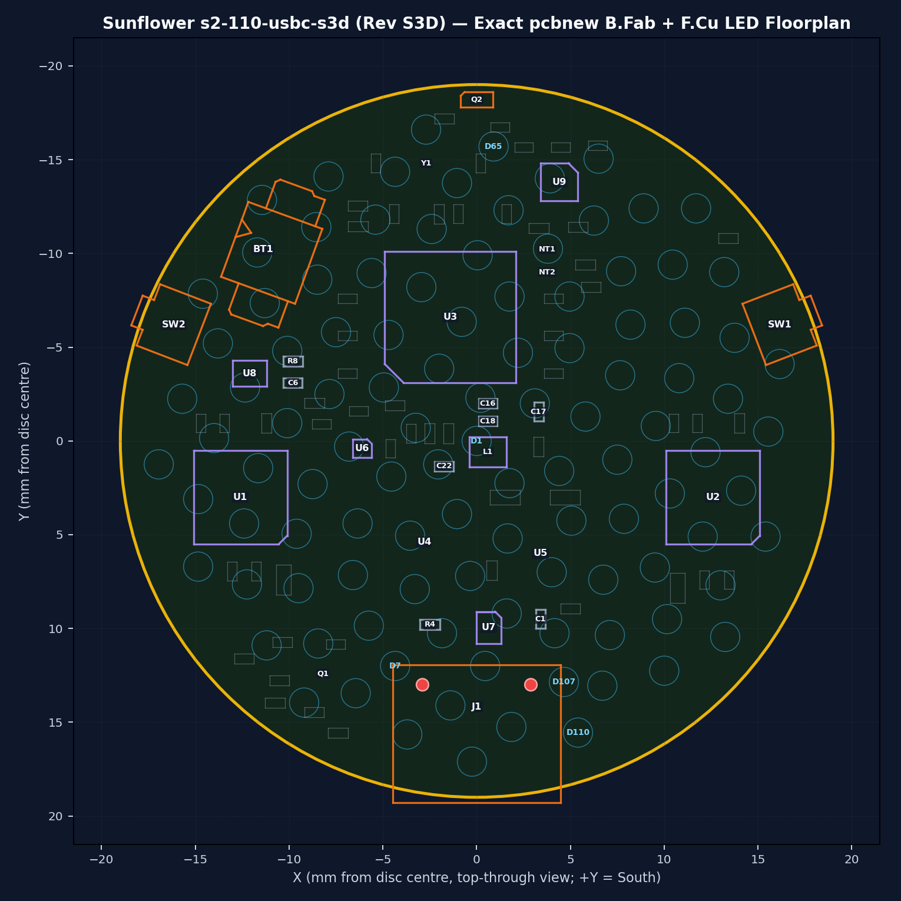
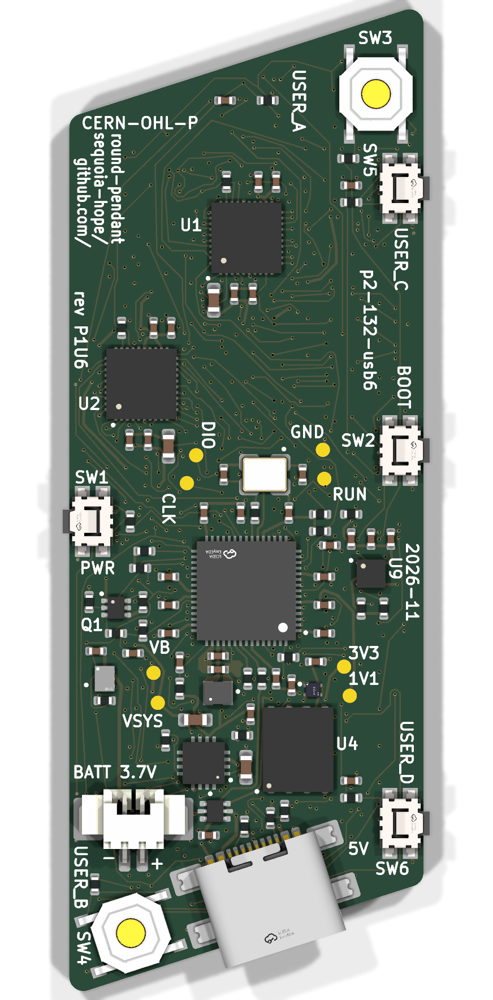
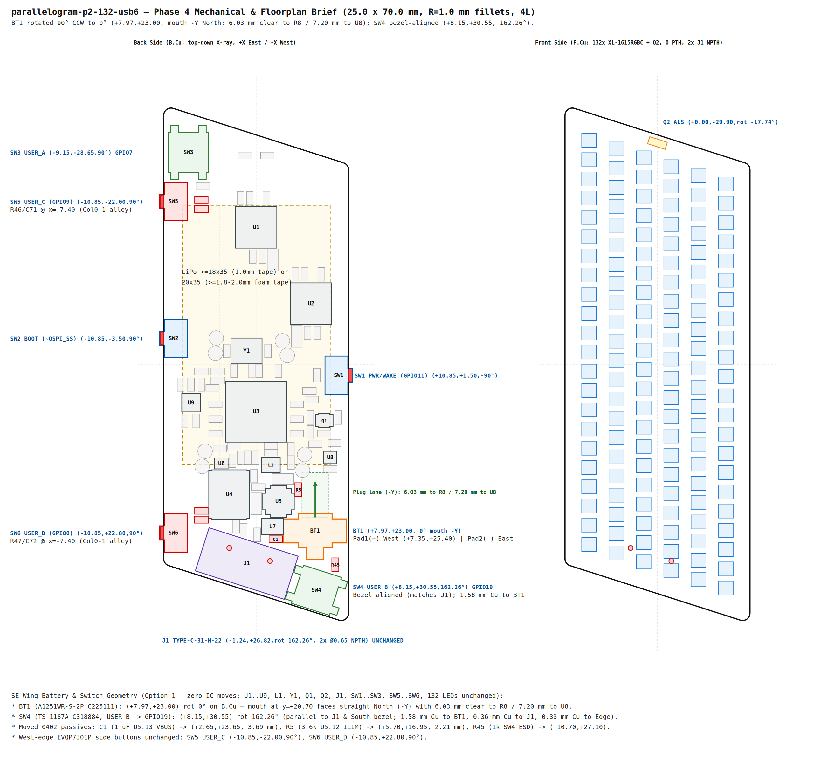
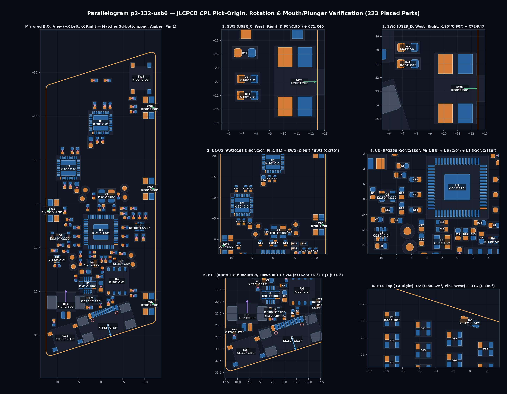
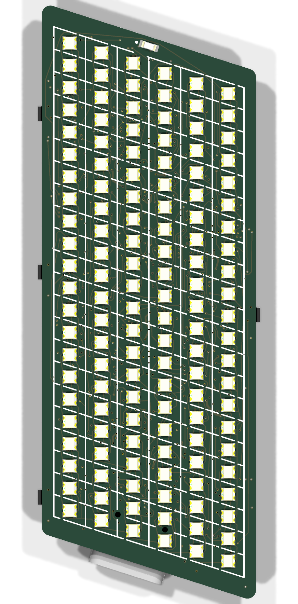

7 gate sign-offs and 9 open questions. Built by scripts/review_page.py from the gate records and design/status.json. Reply in the chat with your choices.
BT1 plug & rear battery spacer): Confirm pre-mating the 1.25 mm PicoBlade plug into inward-facing BT1 (−11.40, −10.20 mm, −110°) before installing the rear battery, and choose between a ≥ 3.50 mm pocketed spacer (~10.0 mm bare stack) for a Ø35 mm cell vs a smaller ≤ 30 mm cell over 2.4 mm foam (plus SW1/SW2 +0.40 mm nominal fingernail rim actuation).R4 = 3.0 kΩ, ~297 mA): Confirm that the selected pouch cell supports 263–328 mA (297 mA typ) fast charge at 0–25 °C ambient, or specify changing R4 to 4.7 kΩ (189 mA typ).B.SilkS clean of board title/revision/URL text (relying on functional connector/button/test-pad labels and hardware BOARD_ID = 4 0b100 on GPIO19..21).Gate 4 — mechanical and layout brief. The agent's fresh-context reviewer passed it (0 blocker, 0 major). Three decisions are yours; all three were also open on S3C and are kept as-is until you answer.

What changed from S3C — check it is what you asked for:
J1 is now the full-SMT TYPE-C-31-M-22: no through-hole slots. Mouth corners stick out 0.8 mm past the 38 mm rim. It is held only by its solder pads, so support it when plugging in on the bench and capture the shell in the bezel.U8 (+ C6, R8) moved into the north-west pocket next to battery socket BT1.C22 is now 1.40 mm from its power pin (was 8.56 mm).U7 sits inline just north of J1, no crossing traces.In2.Cu) is now a solid ground plane right under the back-side chips.BT1 faces inward, so the battery plug goes in before the cell is fitted. There is no reverse-polarity protection: check the plug wiring first.J1 and BT1 (about 3.3 mm tall). Choose:
(a) 35 mm cell on a ≥ 3.5 mm pocketed spacer (about 10 mm total stack), or
(b) a ≤ 30 mm cell on 2.4 mm foam inside the central pocket.SW1/SW2 stick out 0.40 mm nominal; worst-case tolerance leaves them flush to 0.2 mm recessed. Is fingernail press OK?R4 = 3.0 kΩ: about 297 mA, the charger dissipates 0.56 W, charge only at ≤ 25 °C ambient.R4 = 4.7 kΩ: about 189 mA, 0.36 W, runs cooler.BOARD_ID = 4 strap only)?github.com/sequoia-hope/matrix-play.Heads-up: the agent has already routed past Gate 4. Changing the spacer (if it moves J1/BT1) or adding back-silk text means rework; swapping R4 is only a value change.
BT1 plug & rear battery spacer): Confirm pre-mating the 1.25 mm PicoBlade plug into inward-facing BT1 before installing the rear battery, and choose between a ≥ 3.50 mm pocketed spacer (~10.0 mm bare stack) for a Ø35 mm cell vs a ≤ 30 mm cell over 2.4 mm foam (plus SW1/SW2 +0.40 mm nominal fingernail rim actuation).R4 = 3.0 kΩ, ~297 mA): Confirm ~297 mA (0–25 °C ambient) vs R4 = 4.7 kΩ (~189 mA).B.SilkS clean of board name/revision/URL text (BOARD_ID = 4 0b100 hardware strap on GPIO19..21).Gate 4 — mechanical and layout brief (parallelogram-p2-132-usb6). Rotates the back-side LiPo battery connector BT1 (CJT A1251WR-S-2P, C225111) 90° counter-clockwise to face straight North toward board center and shifts the South-East wing push button SW4 (USER_B) deeper into the corner parallel to J1, while keeping every IC (U1..U9, L1, Y1, Q1, Q2), USB-C J1, side buttons SW1/SW2/SW5/SW6, NW button SW3, and all 132 front LEDs (D1..D132) 100% unmoved.


What changed in the South-East wing (Option 1 — "move the switch"):
BT1 (A1251WR-S-2P) rotated 90° CCW to (+7.97, +23.00) mm, 0°: Its mating mouth (y = +20.70 mm) now faces straight North (-Y) toward the LiPo pocket with 6.03 mm unobstructed plug-entry runway to 0402 R8 (7.20 mm to U8), replacing the old 1.28 mm tilted-plug gap in front of U5. Rear signal pads sit at Pad 1 (+ VBAT) West (+7.345, +25.400) and Pad 2 (- BAT_N) East (+8.595, +25.400), clearly marked +, -, and BATT 3.7V on B.SilkS (plus all 8/8 test points labeled on B.SilkS).SW4 (TS-1187A-B-A-B, USER_B -> GPIO19) bezel-aligned at (+8.15, +30.55) mm, 162.26°: Nestled into the acute SE corner at the exact same 17.74° bezel angle as J1, clearing BT1 copper by 1.584 mm, J1 copper by 0.355 mm, and the South/East board edges by 0.331 mm.0402 passives & two test pads nudged (0 IC moves): C1 (1 µF VBUS decoupler -> (+2.65, +23.65), 3.69 mm from U5.13), R5 (3.6 kΩ ILIM -> (+5.70, +16.95), West of the plug lane), and R45 (1 kΩ SW4 ESD -> (+10.70, +27.10)), plus ≤ 0.14 mm alignment nudges on bare pads TP1 (VSYS) and TP3 (VBAT).SW5 USER_C -> GPIO9, SW6 USER_D -> GPIO0) & LiPo standoff: Peg-less EVQP7J01P switches at (-10.85, -22.00) and (-10.85, +22.80) (0.45 mm rest overhang, 0.25 mm proud at 0.20 mm full stroke; paired with 1 kΩ + 100 nF 50 V X7R C307331; use ≤ 18.0 mm-wide LiPo such as 501035 on 1.0 mm tape or ≥ 1.8–2.0 mm double-layer foam tape for a 20 × 35 mm cell over 1.55 mm max switch bodies).BT1 rotated 90° CCW + bezel-aligned SW4):
- BT1 (CJT A1251WR-S-2P) at (+7.97, +23.00) mm, rot = 0.0° on B.Cu: mating mouth at y = +20.70 mm opens straight North (-Y) toward the LiPo pocket with 6.03 mm unobstructed plug runway to 0402 R8 (7.20 mm to U8), 0.305 mm copper-to-edge margin, Pad 1 (+ VBAT) West (+7.345, +25.400) and Pad 2 (- BAT_N) East (+8.595, +25.400).
- SW4 (USER_B TS-1187A) at (+8.15, +30.55) mm, rot = 162.26° (parallel to J1 and the 17.74° South slanted bezel; 1.584 mm copper to BT1, 0.355 mm copper to J1, 0.331 mm copper to Edge.Cuts), plus relocated 0402 passives C1 (+2.65, +23.65, 180°), R5 (+5.70, +16.95, -90°), R45 (+10.70, +27.10, -90°) and nudged test pads TP1/TP3 (0 IC or front-LED moves).0.20 mm stroke, & bezel stop:
- SW5 (USER_C) at (-10.85, -22.00) mm, rot = +90° (West edge North, 0.41 mm courtyard-clear south of SW3, 18.50 mm center-to-center north of SW2).
- SW6 (USER_D) at (-10.85, +22.80) mm, rot = +90° (West edge South, 26.30 mm center-to-center south of SW2, 1.81 mm rotated-courtyard clear of J1, 1.12 mm terminal / 0.97 mm pad north of SW R = 1.00 mm fillet tangent y = +26.270 mm).
- Both actuators sit at x = -12.95 mm at rest (0.45 mm overhang past x = -12.50 mm, identical to SW1/SW2) and reach x = -12.75 mm (0.25 mm proud of Edge.Cuts) at full 0.20 mm push travel; any enclosure bezel must stop >= 0.25 mm proud of x = ±12.50 mm. J1 remains untouched at (-1.24, +26.82), rot = 162.26°.POWMAN wake allocation:
- SW5 (USER_C) -> U3 GPIO9 (Pin 13), SW6 (USER_D) -> U3 GPIO0 (Pin 2), internal RP2350 pull-up (50–80 kΩ), 1 kΩ series protection (R46/R47) + 100 nF 50 V X7R capacitor (C71/C72, C307331) to GND, paired with a >= 20 ms symmetrical press + release firmware debounce window across SW1..SW6 (10 ms max EVQP7J01P OFF bounce + 8.83 ms slow-corner RC rise = 18.83 ms).
- Because RP2350 POWMAN (P1.7) deep sleep has 4 hardware GPIO wake slots (PWRUP0..3) and SW1 (GPIO11) + ACC_INT (GPIO10) use 2, confirm which 2 of {SW3, SW4, SW5, SW6} (if any) should wake P1.7 deep sleep in firmware (all 6 buttons work simultaneously in active and dormant modes).SW1, SW2, SW5, 1.35 + 0.20 = 1.55 mm max height) reach |x| = 9.40 mm (18.80 mm clear span). Confirm either using a <= 18.0 mm-wide cell (e.g. 501035 10 × 35 mm on 1.0 mm foam tape) or >= 1.8–2.0 mm double-layer VHB/foam standoff when mounting a 20 × 35 mm (802035/102035) cell (0.25–0.45 mm clearance above max switch body).Gate 10 — final release (parallelogram-p2-132-usb6, Rev P1U6). Complete 4-layer fab & PCBA package in hw/parallelogram/p2-132-usb6/fab/ (JLC04161H-7628 1.6 mm FR-4, ENIG 1U", mandatory POFV = Yes Type VII epoxy-filled & capped vias [~$70–$95 4L bare-PCB lot surcharge]): 0 ERC violations, 0 DRC errors/warnings, 0 unconnected nets (5,416 tracks, 719 vias), 0 copper_audit / pad_joints / non-LED silk_check defects, 100% collision-free assembly-{top,bottom}.pdf, $13.26/bd @ qty 10 (41/41 BOM rows in live JLCPCB PCBA stock).


Key release checks verified:
223 parts, 0.00° error): Verified in Mirrored-Bottom cpl-overlay.png against 3d-bottom.png: rotated BT1 sits at (107.9700mm, -123.2000mm), Rotation = 180.00° (+0.20 mm c_origin Y-shift, mouth facing straight -Y North, + West / - East — check off-the-shelf LiPo harness polarity with DMM before mating); bezel-aligned SW4 sits at (108.1500mm, -130.5500mm), Rotation = 17.74° (matching J1's 17.74°); West-edge SW5/SW6 sit at Mid X = 88.8250mm, Rotation = 90.00° (matching SW2).design/sim/p2-132-usb6/): Full VSYS + battery-path nodal solve gives -4.64 mV VSYS drop at U6.4 and V(U6.4) = 3.375 V ≥ 3.355 V worst-case at VBAT = 3.50 V at 300 mA burst (GCC ≤ 0x74, mandatory analog GCC scaling); still-air wearable ceiling is 0.54 W (GCC ≤ 0x40, 43.0 °C < 45 °C) with ADC4 foldback on 0.95 W bursts; 1 kΩ + 100 nF 50 V X7R (C307331) + ≥ 20 ms firmware debounce covers 18.83 ms slow-corner EVQP7J01P release and 8 kV ESD flashover (36.35 V margin).run_bytecheck.py): Parent p2-132-usb (225/225 footprints) and p1-66-usb (152/152 footprints) plus all 40 shared library/DRU/table files verified 100% untouched (0 mismatches).hw/parallelogram/p2-132-usb6/fab/{parallelogram-p2-132-usb6-gerbers.zip,bom-jlcpcb.csv,cpl-jlcpcb.csv,assembly-bottom.pdf,assembly-top.pdf,schematic.pdf,parallelogram-p2-132-usb6.step}):
- 4-layer JLC04161H-7628 (1.6 mm FR-4, 1 oz outer / 0.5 oz inner, ENIG 1U" finish, mandatory POFV = Yes [IPC-4761 Type VII epoxy-filled & copper-capped vias] — adds ~$70–$95 4L bare-PCB lot surcharge across 5–10 pcs — double-sided PCBA with Pass 2 F.Cu <= 245 °C for Q2), qty-10 BOM $13.26 / board, 41/41 BOM rows (100%) in live JLCPCB PCBA stock (223 assembled parts).BT1, bezel-aligned SW4, and West-edge switches SW5/SW6:
- Verified in Mirrored-Bottom cpl-overlay.png and 3d-bottom.png: BT1 (107.970, -123.200, Rot = 180.00°, mouth facing straight -Y North with 6.03 mm clear runway, + West / - East — verify off-the-shelf LiPo harness polarity with DMM before plugging in!), SW4 (108.150, -130.550, Rot = 17.74° parallel to J1), and SW5/SW6 (88.825, -78.000 / -122.800, Rot = 90.00°, 0.45 mm rest overhang / 0.25 mm proud at full 0.20 mm stroke).parallelogram-p2-132-usb6-revP1U6) upon user sign-off.This is Rev S3C, the parent of S3D. S3D (above) is being built to fix S3C's failed gates 5–9. If you go with S3D, these S3C sign-offs lapse. Answer them only if you want to order S3C as-is with waivers.
BT1 inward mating & rear 403535 stack (~9.6 mm): Confirm accepting pre-mating the 1.25 mm PicoBlade plug into BT1 (−11.40, −10.20 mm, −110°) before bonding the 35 mm LiPo over 0.05 mm Kapton tape + a ≥ 2.4 mm insulating foam/carrier standoff (to clear 3.26 mm J1 and 3.40 mm mated BT1).403535 cell fast-charge rate (263–328 mA): Confirm the chosen 403535 pouch datasheet permits ~0.6–0.8C (297 mA typ via R4 = 3.0 kΩ), or specify increasing R4 to 4.7 kΩ (189 mA).ADC4 thermal caps & SW1/SW2 rim projection: Confirm firmware ADC4 continuous brightness ceilings (GCC ≤ 105 on pouch-backed battery for ≤ 48 °C, GCC ≤ 9 CC / ≤ 24 CV gated on PGOOD == 0 || CHG == 0 for ≤ 45 °C LiPo) and accept EVQP7J01P +0.40 mm nominal (0.00 to −0.20 mm worst-case tolerance) fingernail rim actuation.B.SilkS (tracked via BOARD_ID = 6 strap NT1 on GPIO19) and accept s2-110-usbc firmware deltas (VBAT_EN on GPIO28, UART1 on GPIO24/25, AW20198 GCR = 0xB9, ≥ 30 ms Q1 ADC settle, Q2 ~293–440 lx NIR indoor range).This is Rev S3C, the parent of S3D. S3D (above) is being built to fix S3C's failed gates 5–9. If you go with S3D, these S3C sign-offs lapse. Answer them only if you want to order S3C as-is with waivers.
Rev S3C floorplan as-routed for 5–10 prototype boards OR authorize Rev S3D layout respin:
- BT1 inward mating (4.04 mm to U3, 3.02 mm to C9): Angle and pre-mate the 51021-0200 plug before applying Kapton + ≥ 2.4 mm foam standoff + 403535 LiPo (Rev S3C), or shift/rotate BT1 (~−128°) and co-locate U8 beside BT1 (Rev S3D).
- Inner-layer stackup role (In1.Cu vs In2.Cu): Accept In1.Cu GND + In1.Cu LX cutout for bench prototype (0 DRC, Phase 8 verified functional), or swap In2.Cu = GND + LX cutout adjacent to B.Cu (Rev S3D).SW1/SW2 +0.400 mm nominal plunger projection: Accept fingernail rim actuation (0.00 to −0.20 mm worst-case tolerance) on the un-scalloped Ø38.0 mm rim.F.SilkS Voronoi seed-web art (1,027 segments): Confirm keeping the clipped white Voronoi sunflower web on F.SilkS (or specify bare dark mask for future runs).B.Cu in Pass 1 and F.Cu (Q2 + 110 LEDs) in Pass 2 (≤ 245 °C) with NO F.Cu wave/hand-soldering on J1's 4 PTH shield slots (sunflower-B_Paste.gbp omits paste on J1's PTH slots and F.Cu LEDs sit 0.18–0.29 mm away; tack outer B.Cu slot edges only on Rev S3C, or switch to full-SMT TYPE-C-31-M-22 C530612 / add B.Paste in Rev S3D).This is Rev S3C, the parent of S3D. S3D (above) is being built to fix S3C's failed gates 5–9. If you go with S3D, these S3C sign-offs lapse. Answer them only if you want to order S3C as-is with waivers.
Rev S3C bench prototype vs Rev S3D layout respin):
- Option A — Order 5–10 Rev S3C bench prototypes from hw/sunflower/s2-110-usbc/fab/: Formally waive Gates 5–9 and Gate 10's J1 paste finding for bench bring-up, ordering JLC04161H-7628 + ENIG 1U" + green LPI mask + tented vias with PCBA instruction Pass 1 = B.Cu, Pass 2 = F.Cu (≤ 245 °C), NO F.Cu wave/hand soldering on J1, then manually tacking J1's outer B.Cu slot edges under a microscope, verifying BT1.1–BT1.2 > 1 MΩ before battery attach, pre-mating BT1 upward (30–45°) + 0.05 mm Kapton + ≥ 2.4 mm rear spacer, and enforcing firmware guards (1x/2x SPI XIP ≤ 50–66 MHz, ADC4 GCC ≤ 105 battery / ≤ 9 CC / ≤ 24 CV on PGOOD == 0 || CHG == 0, GPIO4/5 12 mA + GCR = 0xB9).
- Option B — Hold PCBA order and spin Rev S3D first (Recommended by reviewer): Swap J1 to full-SMT TYPE-C-31-M-22 (C530612), tie Zone 11 (COUT) directly to +1V1 RP2350 ring, give C17 (CFILT) a dedicated GND via, move GND + LX cutout L2 to In2.Cu (0.21 mm under B.Cu), move C22 beside U4.8, pull U3.61/U5.17 vias out of B.Paste, enforce BT1 copper keepout + co-locate U8, populate .kicad_pro netclass_assignments, and move BT1/J1 polarity silk outside connector footprints.phase0.md / phase4.md):
- Confirm 403535 LiPo datasheet permits 263–328 mA (297 mA typ, ~0.58–0.82C) charge current, or change R4 to 4.7 kΩ (189 mA).
- Confirm BT1 inward pre-mating + 0.05 mm Kapton + ≥ 2.4 mm spacer (~9.6 mm stack) and SW1/SW2 +0.40 mm nominal (0.00 to −0.20 mm worst-case) rim projection.
- Confirm keeping Voronoi F.SilkS art (4,631 clipped segments) and omitting board name/rev/URL on B.SilkS (BOARD_ID = 6 via NT1 on GPIO19).Global Sourcing / Pre-order at JLCPCB: 5x IS31FL3745-CLS4-TR (C2678907, ~2,078 at DigiKey / ~648 at Mouser) and 1x RP2350 core inductor AOTA-B201610S3R3-101-T (C42411119, stock 1 at JLC) require JLCPCB Global Sourcing / pre-order.
JLC needs checking from its quote tool or support: the 8-layer 1.0 mm stackup, and whether 0.2/0.1 mm filled via-in-pad is allowed (its listed range is 0.15-0.55 mm drill; 8 such vias on the board). Not blocking routing.
Light sensor stock: ALS-PT19 C146233 shows 0 at JLC (~15,000+ at DigiKey/Mouser via Global Sourcing alongside the drivers). Same-footprint local JLC option: Tonyu DYWH-ALS-PT19-315C/4T (C47416518, stock 41). Footprint is identical either way.
403535 cell: send its spec sheet or listing if you have one, to confirm capacity and that its maximum charge rate is at least 1C. Charging stays at about 297 mA by your choice.
Tried moving C9/C13 right up to pins 11/54 (variant g work, not adopted): C13 under pins 53/54 blocks CS3_16's only escape, and C9 on pin 11's axis leaves CS3_4 (D104-D103) unroutable; no legal via within 2 mm in either case. Choose: keep plane-only decoupling (F), move a few LEDs/escapes, shift R14/R15 down ~0.5 mm for C13, or wait for laser microvias (JLC quote).
Sunflower 38 mm 4-layer family (design/study/sunflower/README.md): s2-110-usbc ($12.55 BOM, 110 LEDs + centre LED, back-side USB-C, rim ALS, test pads, ID 6, 0 open / 0 DRC / 637 vias, no via-in-pad, fab/ CPL fixed, all 34 LCSC parts in stock incl. L1 at 1,520) is the finished routed/gated candidate alongside Penrose pn-dense ($11.75) and pn-dense-1d ($10.81); earlier POFV/probe tiers are s1-66-pofv ($10.73), s2-88-pofv ($12.02), s2-88 ($12.02, thin joints left), s2-110 (1 open) and s2-132 (2 opens). On s2-110-usbc, Gates 1-3 passed, Gates 0/4/10 await your sign-off, and Gates 5-9 are held on frozen Rev S3C copper/rules/silk findings (see s2-110-usbc-release below). Also still open: switch MCU to RP2040 (~-$0.56) on a future spin?
Sunflower s2-110-usbc Gates 0, 4 & 10 sign-off (design/gates/sunflower-s2-110-usbc/phase10.md): confirm (1) ordering Rev S3C prototype with documented waivers vs spinning Rev S3D first, (2) 403535 cell 297 mA (~0.6-0.8C) charge rate, (3) BT1 upward-angled pre-mating + Kapton + >=2.4 mm rear spacer (~9.6 mm stack) and SW1/SW2 +0.40 mm rim projection, and (4) front Voronoi silk art + back silk identity omission.
Square-bezel bga13-169/bga15-225 stall at 50+ open around the WLCSP drivers behind the 1.65 mm array. Choose: via-in-pad (POFV) at the drivers, pre-escaping the WLCSP balls first (route_variant.py --escape-mode bga), or a wider LED pitch.
Parallelogram p2-132-usb6 Gates 4 & 10 sign-off (design/gates/parallelogram-p2-132-usb6/phase4.md & phase10.md): confirm (1) Option 1 SE placement — BT1 rotated 90 deg CCW to (+7.97, +23.00, 0 deg) facing -Y North toward LiPo pocket (6.03 mm clear runway to R8, 7.20 mm to U8; Pad 1 + VBAT West, Pad 2 - BAT_N East) + bezel-aligned SW4 at (+8.15, +30.55, 162.26 deg) + West-edge SW5 (-10.85, -22.00, GPIO9) & SW6 (-10.85, +22.80, GPIO0, C71/C72 50V X7R C307331), (2) <=18.0 mm LiPo on 1.0 mm tape OR >=1.8-2.0 mm VHB/foam standoff for a 20x35 mm cell over 1.55 mm max EVQP7J01P housings, (3) >=20 ms FW debounce, GCC <= 0x40 (0.54 W) continuous worn thermal cap + ADC4 foldback, and which 2 of {SW3..SW6} share POWMAN P1.7 wake, and (4) 4L JLC04161H-7628 ENIG 1U" + POFV=Yes (~$70-$95 4L bare-PCB POFV lot surcharge) & tag parallelogram-p2-132-usb6-revP1U6.